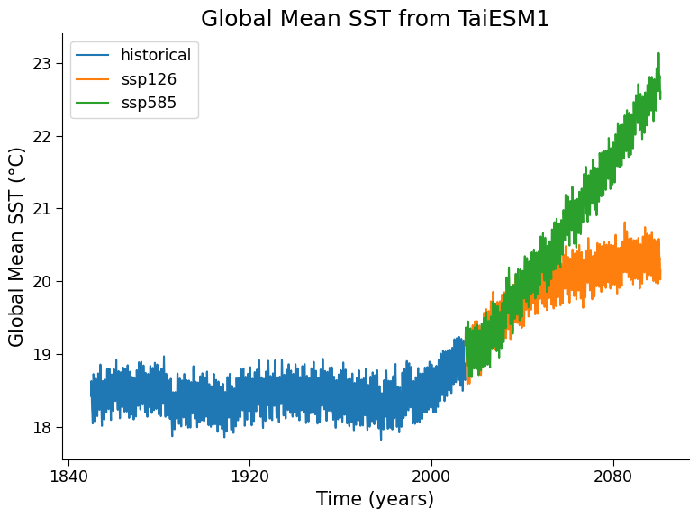

Tutorial 2: Future climate scenarios & Multi-model Ensembles#
Week 2, Day 1, An Ensemble of Futures
Content creators: Brodie Pearson, Julius Busecke, Tom Nicholas, Sam Ditkovsky
Content reviewers: Mujeeb Abdulfatai, Nkongho Ayuketang Arreyndip, Jeffrey N. A. Aryee, Younkap Nina Duplex, Sloane Garelick, Paul Heubel, Zahra Khodakaramimaghsoud, Peter Ohue, Jenna Pearson, Abel Shibu, Derick Temfack, Peizhen Yang, Cheng Zhang, Chi Zhang, Ohad Zivan
Content editors: Paul Heubel, Jenna Pearson, Ohad Zivan, Chi Zhang
Production editors: Wesley Banfield, Paul Heubel, Jenna Pearson, Konstantine Tsafatinos, Chi Zhang, Ohad Zivan
Our 2024 Sponsors: CMIP, NFDI4Earth
Tutorial Objectives#
Estimated timing for tutorial: 40 minutes
In this tutorial, we will analyze data from five different CMIP6 models developed by various institutions around the world, focusing on their historical simulations and low-emission projections (SSP1-2.6). By the end of this tutorial, you will be able to
Load CMIP6 Sea Surface Temperature (SST) data from multiple models;
Calculate the SST anomalies, and recall the concept of temperature anomaly in relation to a base period
Setup#
# installations ( uncomment and run this cell ONLY when using google colab or kaggle )
# !pip install condacolab &> /dev/null
# import condacolab
# condacolab.install()
# # Install all packages in one call (+ use mamba instead of conda), this must in one line or code will fail
# !mamba install "xarray==2024.2.0" xarray-datatree intake-esm gcsfs xmip aiohttp nc-time-axis cf_xarray xarrayutils &> /dev/null
# imports
import intake
import matplotlib.pyplot as plt
import xarray as xr
from xmip.preprocessing import combined_preprocessing
from xmip.postprocessing import _parse_metric
from datatree import DataTree
Install and import feedback gadget#
Show code cell source
# @title Install and import feedback gadget
!pip3 install vibecheck datatops --quiet
from vibecheck import DatatopsContentReviewContainer
def content_review(notebook_section: str):
return DatatopsContentReviewContainer(
"", # No text prompt
notebook_section,
{
"url": "https://pmyvdlilci.execute-api.us-east-1.amazonaws.com/klab",
"name": "comptools_4clim",
"user_key": "l5jpxuee",
},
).render()
feedback_prefix = "W2D1_T2"
Figure settings#
Show code cell source
# @title Figure settings
import ipywidgets as widgets # interactive display
plt.style.use(
"https://raw.githubusercontent.com/neuromatch/climate-course-content/main/cma.mplstyle"
)
%matplotlib inline
Helper functions#
Show code cell source
# @title Helper functions
def readin_cmip6_to_datatree(facet_dict):
# open an intake catalog containing the Pangeo CMIP cloud data
col = intake.open_esm_datastore(
"https://storage.googleapis.com/cmip6/pangeo-cmip6.json"
)
# from the full `col` object, create a subset using facet search
cat = col.search(
source_id=facet_dict['source_id'],
variable_id=facet_dict['variable_id'],
member_id=facet_dict['member_id'],
table_id=facet_dict['table_id'],
grid_label=facet_dict['grid_label'],
experiment_id=facet_dict['experiment_id'],
require_all_on=facet_dict['require_all_on'] # make sure that we only get models which have all of the above experiments
)
# convert the sub-catalog into a datatree object, by opening each dataset into an xarray.Dataset (without loading the data)
kwargs = dict(
preprocess=combined_preprocessing, # apply xMIP fixes to each dataset
xarray_open_kwargs=dict(
use_cftime=True
), # ensure all datasets use the same time index
storage_options={
"token": "anon"
}, # anonymous/public authentication to google cloud storage
)
cat.esmcat.aggregation_control.groupby_attrs = ["source_id", "experiment_id"]
dt = cat.to_datatree(**kwargs)
return dt
def global_mean(ds: xr.Dataset) -> xr.Dataset:
"""Global average, weighted by the cell area"""
return ds.weighted(ds.areacello.fillna(0)).mean(["x", "y"], keep_attrs=True)
Video 1: Why So Many Earth System Models?#
Submit your feedback#
Show code cell source
# @title Submit your feedback
content_review(f"{feedback_prefix}_Why_so_many_ESMs_Video")
If you want to download the slides: https://osf.io/download/3sa5z/
Submit your feedback#
Show code cell source
# @title Submit your feedback
content_review(f"{feedback_prefix}_Why_so_many_ESMs_Slides")
Section 1: Load CMIP6 SST Data from Five Models and Three Experiments#
In the previous section, you investigated the internal variability in a single CMIP6 model (TaiESM1) simulated past temperature.
Now we will start to analyze a multi-model ensemble that consists of data from multiple CMIP6 models, and includes both historical simulations and future scenario projections.
Your multi-model ensemble will consist of Five different CMIP6 models developed by institutions from a variety of countries:
TaiESM1 (Research Center for Environmental Changes, Taiwan),
IPSL-CM6A-LR (Institut Pierre Simon Laplace, France),
GFDL-ESM4 (NOAA Geophysical Fluid Dynamics Laboratory, USA),
ACCESS-CM2 (CSIRO and ARCCSS, Australia), and
MPI-ESM1-2-LR (Max Planck Institute, Germany).
We can specify these models through the source_id facet. You can see a table of CMIP6 source_id values here, and you can learn more about CMIP through our CMIP Resource Bank and the CMIP website.
Note that these are only a subset of the dozens of models, institutes, countries, and experiments that contribute to CMIP6, as discussed in the previous W2D1 Tutorial 2 video. Some of the abbreviations in the model names refer to institutes (MPI/GFDL), while some refer to the complexity and version of the model (e.g., Earth System or Climate Model [ESM/CM] and low- or high-resolution [LR/HR]). There are often several models from a single institute with each having a distinct level of complexity.
# selected CMIP6 models to explore
source_ids = ["IPSL-CM6A-LR", "GFDL-ESM4", "ACCESS-CM2", "MPI-ESM1-2-LR", "TaiESM1"]
# dictionary of facets for query of surface temperature data
facet_dict = { "source_id":source_ids,
"variable_id":"tos",
"member_id":"r1i1p1f1",
"table_id":"Omon",
"grid_label":"gn",
"experiment_id":["historical", "ssp126", "ssp585"],
"require_all_on":"source_id"
}
# dictionary for query of cell area metric
facet_dict_area = { "source_id":source_ids,
"variable_id":"areacello",
"member_id":"r1i1p1f1",
"table_id":"Ofx",
"grid_label":"gn",
"experiment_id":"historical",
"require_all_on":"source_id"
}
# search for temperature and area data and return datatree objects
dt = readin_cmip6_to_datatree(facet_dict)
dt_area = readin_cmip6_to_datatree(facet_dict_area)
# merge area metric into datatree object
dt_with_area = DataTree()
for model, subtree in dt.items():
metric = dt_area[model]["historical"].ds["areacello"]
dt_with_area[model] = subtree.map_over_subtree(_parse_metric, metric)
/home/runner/micromamba/envs/climatematch/lib/python3.11/site-packages/intake_esm/__init__.py:6: UserWarning: pkg_resources is deprecated as an API. See https://setuptools.pypa.io/en/latest/pkg_resources.html. The pkg_resources package is slated for removal as early as 2025-11-30. Refrain from using this package or pin to Setuptools<81.
from pkg_resources import DistributionNotFound, get_distribution
--> The keys in the returned dictionary of datasets are constructed as follows:
'source_id/experiment_id'
--> The keys in the returned dictionary of datasets are constructed as follows:
'source_id/experiment_id'
Let’s first reproduce the previous tutorial’s time series of Global Mean SST \(\left(GMSST\right)\) from TaiESM1 through the historical experiment and two future emissions scenarios
# average every dataset in the tree globally
dt_gm = dt_with_area.map_over_subtree(global_mean)
# create plot
fig, ax = plt.subplots()
# draw every scenario
for experiment in ["historical", "ssp126", "ssp585"]:
da = dt_gm["TaiESM1"][experiment].ds.tos
da.plot(label=experiment, ax=ax)
# aesthetics
ax.set_title("Global Mean SST from TaiESM1")
ax.set_ylabel("Global Mean SST (°C)")
ax.set_xlabel("Time (years)")
ax.legend()
<matplotlib.legend.Legend at 0x7efbc0101710>

Coding Exercise 1.1: Combine past and future data, remove seasonal oscillations, and plot all 5 of the CMIP6 models we just loaded#
The historical and projected data are separate time series. Complete the
xr.concat()function to combine the historical and projected data into a single continuous time series for each model.The previous time series oscillated very rapidly due to Earth’s seasonal cycles. Finish the
xarray.resample()function so that it smooths the monthly data with a one-year running mean. This will make it easier to distinguish the long-term changes in sea surface temperature.Hint: this code is already set up to use all 5 of the CMIP6 models you just loaded, as it loops through and plots each model in the DataTree [
dt.keys()]
#################################################
## TODO for students: Plot annually smoothed global mean SST for all models##
# please remove the following line of code once you have completed the exercise:
raise NotImplementedError("Student exercise: Plot annually smoothed global mean SST for all models")
#################################################
def plot_historical_ssp126_combined(dt, ax):
for model in dt.keys():
datasets = []
for experiment in ["historical", "ssp126"]:
datasets.append(dt[model][experiment].tos)
# for each of the models, concatenate its historical and future data
da_combined = xr.concat(...)
# plot annual averages
da_combined.coarsen(...).mean().plot(label=model, ax=ax)
fig, ax = plt.subplots()
# plot_historical_ssp126_combined
_ = ...
ax.set_title("Global Mean SST from five CMIP6 models (annually smoothed)")
ax.set_ylabel("Global Mean SST (°C)")
ax.set_xlabel("Time (years)")
ax.legend()
Example output:

Submit your feedback#
Show code cell source
# @title Submit your feedback
content_review(f"{feedback_prefix}_Coding_Exercise_1_1")
Question 1.1#
Why do you think the global mean temperature varies so much between models?*
*If you get stuck here, reflect on the videos from earlier today and the tutorials/videos from the Introduction to Climate Modeling day for inspiration.
Submit your feedback#
Show code cell source
# @title Submit your feedback
content_review(f"{feedback_prefix}_Questions_1_1")
Coding Exercise 1.2#
As you just saw, the global mean SST varies between climate models. This is not surprising given the slight differences in physics, numerics, and discretization between each model.
When we are looking at future projections, we care about how each model has changed relative to their equilibrium/previous state. To do this, we typically subtract a historical reference period from the time series. This creates a new time series which we call the temperature anomaly relative to that period. Recall that you already calculated and used anomalies earlier in the course (e.g., on W1D1, Tutorial 6).
Modify the following code to recreate the previous multi-model figure, but now instead plot the global mean sea surface temperature (GMSST) anomaly relative to the 1950-1980 base period (i.e., subtract the 1950-1980 mean GMSST of each model from that model’s time series)
Hint: you will need to use ds.sel to select data during the base period (see here under “Indexing with dimension names” for a helpful example) along with the averaging operator, .mean().
#################################################
## TODO for students: Plot global mean SST anomaly for all models.##
# Please remove the following line of code once you have completed the exercise:
raise NotImplementedError("Student exercise: Plot global mean SST anomaly for all models.")
#################################################
# calculate anomaly to reference period
def datatree_anomaly(dt):
dt_out = DataTree()
for model, subtree in dt.items():
# find the temporal average over the desired reference period
ref = ...
dt_out[model] = subtree - ref
return dt_out
# apply anomaly function
dt_gm_anomaly = datatree_anomaly(dt_gm)
# create plot
fig, ax = plt.subplots()
# draw data with helper function
plot_historical_ssp126_combined(dt_gm_anomaly, ax)
# aesthetics
ax.set_title(
"Global Mean SST Anomaly from five CMIP6 models (base period: 1950 to 1980)"
)
ax.set_ylabel("Global Mean SST Anomaly (°C)")
ax.set_xlabel("Time (years)")
ax.legend()
Example output:

Submit your feedback#
Show code cell source
# @title Submit your feedback
content_review(f"{feedback_prefix}_Coding_Exercise_1_2")
Questions 1.2: Climate Connection#
How does this figure compare to the previous one where the reference period was not subtracted?
This figure uses the reference period of 1950-1980 for its anomaly calculation. How does the variability across models 100 years before the base period (1850) compare to the variability 100 years after the base period (2080)? Why do you think this is?
Submit your feedback#
Show code cell source
# @title Submit your feedback
content_review(f"{feedback_prefix}_Questions_1_2")
Summary#
In this tutorial, we expanded on the previous examination of a single CMIP6 model (TaiESM1 or MPI-ESM1-2-LR), to instead work with multi-model ensembles comprising five different CMIP6 models developed by institutions around the world (TaiESM1, IPSL-CM6A-LR, GFDL-ESM4, ACCESS-CM2, and MPI-ESM1-2-LR). We demonstrated the importance of anomalizing each of these models relative to a base period when calculating changes in the simulated Earth system. If variables are not anomalized, these absolute values can differ significantly between models due to the diversity of models (i.e., their distinct physics, numerics, and discretization).
Resources#
This tutorial uses data from the simulations conducted as part of the CMIP6 multi-model ensemble.
For examples on how to access and analyze data, please visit the Pangeo Cloud CMIP6 Gallery
For more information on what CMIP is and how to access the data, please see this page.